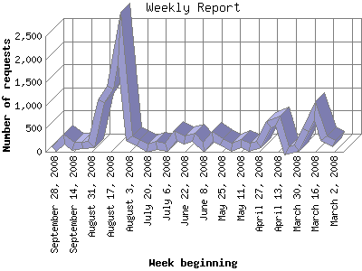

The Weekly Report identifies the activity for each week within the report
time frame. Remember that one page hit can result in several server requests
as the images for each page are loaded.
Note: Depending on the
report time frame for this report the first and last week may not represent
a full seven day week, resulting in lower hits.

| Week beginning | Number of requests | Number of page requests | |
|---|---|---|---|
| 1. | March 2, 2008 | 173 | 17 |
| 2. | March 9, 2008 | 296 | 31 |
| 3. | March 16, 2008 | 886 | 140 |
| 4. | March 23, 2008 | 468 | 61 |
| 5. | March 30, 2008 | 84 | 17 |
| 6. | April 6, 2008 | 12 | 9 |
| 7. | April 13, 2008 | 667 | 96 |
| 8. | April 20, 2008 | 585 | 84 |
| 9. | April 27, 2008 | 152 | 10 |
| 10. | May 4, 2008 | 88 | 27 |
| 11. | May 11, 2008 | 168 | 36 |
| 12. | May 18, 2008 | 106 | 23 |
| 13. | May 25, 2008 | 221 | 23 |
| 14. | June 1, 2008 | 341 | 60 |
| 15. | June 8, 2008 | 95 | 29 |
| 16. | June 15, 2008 | 320 | 57 |
| 17. | June 22, 2008 | 245 | 31 |
| 18. | June 29, 2008 | 352 | 53 |
| 19. | July 6, 2008 | 106 | 33 |
| 20. | July 13, 2008 | 143 | 22 |
| 21. | July 20, 2008 | 75 | 19 |
| 22. | July 27, 2008 | 204 | 23 |
| 23. | August 3, 2008 | 299 | 37 |
| 24. | August 10, 2008 | 2,466 | 219 |
| 25. | August 17, 2008 | 1,395 | 171 |
| 26. | August 24, 2008 | 1,090 | 136 |
| 27. | August 31, 2008 | 155 | 22 |
| 28. | September 7, 2008 | 134 | 24 |
| 29. | September 14, 2008 | 121 | 16 |
| 30. | September 21, 2008 | 280 | 32 |
| 31. | September 28, 2008 | 51 | 14 |
Most active week beginning August 10, 2008 : 219 pages sent. 2,466 requests handled.
Weekly average: 50 pages sent. 379 requests handled.
This report was generated on September 30, 2008 10:53.
Report time frame March 7, 2008 08:09 to September 29, 2008 23:47.
| Web statistics report produced by: analog 6.0 / Report Magic 2.21 |